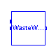
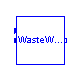

This package contains connectors and interfaces (partial models) for wastewater treatment components based on the Activated Sludge Model No.1 (ASM1).
Main Author: Gerald Reichl Technische Universitaet Ilmenau Faculty of Informatics and Automation Department Dynamics and Simulation of ecological Systems P.O. Box 10 05 65 98684 Ilmenau Germany email: gerald.reichl@tu-ilmenau.de Copyright (C) 2000 - 2001, Gerald Reichl
The Modelica package is free software; it can be redistributed and/or modified under the terms of the Modelica license, see the license conditions and the accompanying disclaimer in the documentation of package Modelica in file "Modelica/package.mo".
This partial model provides connectors and equations that are needed in the biological components (nitrification and denitrification tank) for ASM1 wastewater treatment plant models. Parameters are coded according the ASM1 [1,2] standard distribution. Changes to this parameters are subject to the modeller. References: [1] M. Henze and C.P.L. Grady Jr and W. Gujer and G.v.R. Marais and T. Matsuo: Activated Sludge Model No.1. IAWQ, 1987. [2] M. Henze and W.Gujer and T. Mino and. M.v. Loosdrecht: Activated Sludge Models ASM1, ASM2, ASM2d, and ASM3. IWA Task Group on Mathematical Modelling for Design and Operation of Biological Wastewater Treatment, 2000.
| Name | Default | Description |
|---|---|---|
| Y_h | 0.67 | Heterotrophic Yield [g Xbh COD formed/(g COD utilised)] |
| Y_a | 0.24 | Autotrophic Yield [g Xba COD formed/(g N utilised)] |
| f_p | 0.08 | Fraction of biomass to particulate products [-] |
| i_xb | 0.086 | Fraction nitrogen in biomass [g N/(g COD)] |
| i_xp | 0.06 | Fraction nitrogen in particulate products [g N/(g COD)] |
| mu_h_T | 4.0 | Maximum heterotrophic growth rate at T=15 deg C [day^-1] |
| b_h_T | 0.28 | Heterotrophic decay rate at T=15 deg C [day^-1] |
| mu_a_T | 0.5 | Maximum autotrophic growth rate at T=15 deg C[day^-1] |
| b_a_T | 0.1 | Autotrophic decay rate at T=15 deg C [day^-1] |
| k_a_T | 0.06 | Ammonification rate at T=15 deg C [m3/(g COD day)] |
| k_h_T | 1.75 | Maximum specific hydrolysis rate at T=15 deg C [g Xs/(g Xbh COD day)] |
| K_x_T | 0.0175 | Half-saturation (hydrolysis) at T=15 deg C [g Xs/(g Xbh COD)] |
| K_nh | 1.0 | Half-saturation (auto. growth) [g NH-N/m3] |
| K_s | 20.0 | Half-saturation (hetero. growth) [g COD/m3] |
| K_oh | 0.2 | Half-saturation (hetero. oxygen) [g O/m3] |
| K_no | 0.5 | Half-saturation (nitrate) [g NO-N/m3] |
| K_oa | 0.4 | Half-saturation (auto. oxygen) [g O/m3] |
| ny_g | 0.8 | Anoxic growth rate correction factor [-] |
| ny_h | 0.4 | Anoxic hydrolysis rate correction factor [-] |
partial model ASM1base "Base class of WWTP modelling by ASM1"
extends Interfaces.stoichiometry;
package WWU = WasteWater.WasteWaterUnits;
// parameters based on the original ASM1 publication based on 15 deg C
Real mu_h "Maximum heterotrophic growth rate f(T) [day^-1]";
Real b_h "Heterotrophic decay rate f(T) [day^-1]";
Real mu_a "Maximum autotrophic growth rate f(T) [day^-1]";
//Real K_nh "Half-saturation (auto. growth) f(T) [g NH-N/m3]";
Real b_a "Autotrophic decay rate f(T) [day^-1]";
Real k_a "Ammonification rate f(T) [m3/(g COD day)]";
Real k_h "Maximum specific hydrolysis rate f(T) [g Xs/(g Xbh COD day)]";
Real K_x "Half-saturation (hydrolysis) f(T) [g Xs/(g Xbh COD)]";
parameter Real mu_h_T=4.0
"Maximum heterotrophic growth rate at T=15 deg C [day^-1]";
parameter Real b_h_T=0.28 "Heterotrophic decay rate at T=15 deg C [day^-1]";
parameter Real mu_a_T=0.5
"Maximum autotrophic growth rate at T=15 deg C[day^-1]";
parameter Real b_a_T=0.1 "Autotrophic decay rate at T=15 deg C [day^-1]";
parameter Real k_a_T=0.06
"Ammonification rate at T=15 deg C [m3/(g COD day)]";
parameter Real k_h_T=1.75
"Maximum specific hydrolysis rate at T=15 deg C [g Xs/(g Xbh COD day)]";
parameter Real K_x_T=0.0175
"Half-saturation (hydrolysis) at T=15 deg C [g Xs/(g Xbh COD)]";
parameter Real K_nh=1.0 "Half-saturation (auto. growth) [g NH-N/m3]";
parameter Real K_s=20.0 "Half-saturation (hetero. growth) [g COD/m3]";
parameter Real K_oh=0.2 "Half-saturation (hetero. oxygen) [g O/m3]";
parameter Real K_no=0.5 "Half-saturation (nitrate) [g NO-N/m3]";
parameter Real K_oa=0.4 "Half-saturation (auto. oxygen) [g O/m3]";
parameter Real ny_g=0.8 "Anoxic growth rate correction factor [-]";
parameter Real ny_h=0.4 "Anoxic hydrolysis rate correction factor [-]";
WWU.MassConcentration Si "Soluble inert organic matter";
WWU.MassConcentration Ss "Readily biodegradable substrate";
WWU.MassConcentration Xi "Particulate inert organic matter";
WWU.MassConcentration Xs "Slowly biodegradable substrate";
WWU.MassConcentration Xbh "Active heterotrophic biomass";
WWU.MassConcentration Xba "Active autotrophic biomass";
WWU.MassConcentration Xp "Particulate products from biomass decay";
WWU.MassConcentration So "Dissolved oxygen";
WWU.MassConcentration Sno "Nitrate and nitrite nitrogen";
WWU.MassConcentration Snh "Ammonium nitrogen";
WWU.MassConcentration Snd "Soluble biodegradable organic nitrogen";
WWU.MassConcentration Xnd "Particulate biodegradable organic nitrogen";
WWU.Alkalinity Salk "Alkalinity";
Real p1;
Real p2;
Real p3;
Real p4;
Real p5;
Real p6;
Real p7;
Real p8;
Real r1;
Real r2;
Real r3;
Real r4;
Real r5;
Real r6;
Real r7;
Real r8;
Real r9;
Real r10;
Real r11;
Real r12;
Real r13;
Real inputSi;
Real inputSs;
Real inputXi;
Real inputXs;
Real inputXbh;
Real inputXba;
Real inputXp;
Real inputSo;
Real inputSno;
Real inputSnh;
Real inputSnd;
Real inputXnd;
Real inputSalk;
Real aeration;
Interfaces.WWFlowAsm1in In;
Interfaces.WWFlowAsm1out Out;
Interfaces.WWFlowAsm1out MeasurePort;
Modelica.Blocks.Interfaces.InPort T(final n=1);
equation
// Temperature dependent Kinetic parameters based on 15 deg C
// may be adapted to 10 or 20 deg C
mu_h = mu_h_T*exp(0.069*(T.signal[1] - 15));
b_h = b_h_T*exp(0.069*(T.signal[1] - 15));
mu_a = mu_a_T*exp(0.098*(T.signal[1] - 15));
//K_nh=1.0*exp(0.069*(T.signal[1]-15));
b_a = b_a_T*exp(0.08*(T.signal[1] - 15));
k_a = k_a_T*exp(0.069*(T.signal[1] - 15));
k_h = k_h_T*exp(0.11*(T.signal[1] - 15));
K_x = K_x_T*exp(0.11*(T.signal[1] - 15));
// Process Rates
p1 = mu_h*(Ss/(K_s + Ss))*(So/(K_oh + So))*Xbh;
p2 = mu_h*(Ss/(K_s + Ss))*(K_oh/(K_oh + So))*(Sno/(K_no + Sno))*ny_g*Xbh;
p3 = mu_a*(Snh/(K_nh + Snh))*(So/(K_oa + So))*Xba;
p4 = b_h*Xbh;
p5 = b_a*Xba;
p6 = k_a*Snd*Xbh;
p7 = k_h*((Xs/Xbh)/(K_x + (Xs/Xbh)))*((So/(K_oh + So)) + ny_h*(K_oh/(K_oh +
So))*(Sno/(K_no + Sno)))*Xbh;
p8 = p7*Xnd/Xs;
// biochemical reactions
r1 = 0;
r2 = (-p1 - p2)/Y_h + p7;
r3 = 0;
r4 = (1 - f_p)*(p4 + p5) - p7;
r5 = p1 + p2 - p4;
r6 = p3 - p5;
r7 = f_p*(p4 + p5);
r8 = -((1 - Y_h)/Y_h)*p1 - ((4.57 - Y_a)/Y_a)*p3;
r9 = -((1 - Y_h)/(2.86*Y_h))*p2 + p3/Y_a;
r10 = -i_xb*(p1 + p2) - (i_xb + (1/Y_a))*p3 + p6;
r11 = -p6 + p8;
r12 = (i_xb - f_p*i_xp)*(p4 + p5) - p8;
r13 = -i_xb/14*p1 + ((1 - Y_h)/(14*2.86*Y_h) - (i_xb/14))*p2 - ((i_xb/14) + 1
/(7*Y_a))*p3 + p6/14;
// derivatives
der(Si) = inputSi + r1;
der(Ss) = inputSs + r2;
der(Xi) = inputXi + r3;
der(Xs) = inputXs + r4;
der(Xbh) = inputXbh + r5;
der(Xba) = inputXba + r6;
der(Xp) = inputXp + r7;
der(So) = inputSo + r8 + aeration;
der(Sno) = inputSno + r9;
der(Snh) = inputSnh + r10;
der(Snd) = inputSnd + r11;
der(Xnd) = inputXnd + r12;
der(Salk) = inputSalk + r13;
// Outputs
Out.Q + In.Q = 0;
Out.Si = Si;
Out.Ss = Ss;
Out.Xi = Xi;
Out.Xs = Xs;
Out.Xbh = Xbh;
Out.Xba = Xba;
Out.Xp = Xp;
Out.So = So;
Out.Sno = Sno;
Out.Snh = Snh;
Out.Snd = Snd;
Out.Xnd = Xnd;
Out.Salk = Salk;
MeasurePort.Si = Si;
MeasurePort.Ss = Ss;
MeasurePort.Xi = Xi;
MeasurePort.Xs = Xs;
MeasurePort.Xbh = Xbh;
MeasurePort.Xba = Xba;
MeasurePort.Xp = Xp;
MeasurePort.So = So;
MeasurePort.Sno = Sno;
MeasurePort.Snh = Snh;
MeasurePort.Snd = Snd;
MeasurePort.Xnd = Xnd;
MeasurePort.Salk = Salk;
end ASM1base;
WasteWater.ASM1.Interfaces.WWFlowAsm1inConnectors WWFlowAsm1in and WWFlowAsm1out are nearly identical. The difference is in the icons to more easily identify the inflow and outflow side of a component. The connector consists of one flow variable and 13 potential variables (ASM1 concentrations).
connector WWFlowAsm1in "Inflow connector of ASM1 components" package WWU = WasteWater.WasteWaterUnits; flow WWU.VolumeFlowRate Q; WWU.MassConcentration Si; WWU.MassConcentration Ss; WWU.MassConcentration Xi; WWU.MassConcentration Xs; WWU.MassConcentration Xbh; WWU.MassConcentration Xba; WWU.MassConcentration Xp; WWU.MassConcentration So; WWU.MassConcentration Sno; WWU.MassConcentration Snh; WWU.MassConcentration Snd; WWU.MassConcentration Xnd; WWU.Alkalinity Salk; end WWFlowAsm1in;
WasteWater.ASM1.Interfaces.WWFlowAsm1out
Connectors WWFlowAsm1in and WWFlowAsm1out are nearly identical. The difference is in the icons to more easily identify the inflow and outflow side of a component. The connector consists of one flow variable and 13 potential variables (ASM1 concentrations).
connector WWFlowAsm1out "Outflow connector of ASM1 components" package WWU = WasteWater.WasteWaterUnits; flow WWU.VolumeFlowRate Q; WWU.MassConcentration Si; WWU.MassConcentration Ss; WWU.MassConcentration Xi; WWU.MassConcentration Xs; WWU.MassConcentration Xbh; WWU.MassConcentration Xba; WWU.MassConcentration Xp; WWU.MassConcentration So; WWU.MassConcentration Sno; WWU.MassConcentration Snh; WWU.MassConcentration Snd; WWU.MassConcentration Xnd; WWU.Alkalinity Salk; end WWFlowAsm1out;
WasteWater.ASM1.Interfaces.AirFlow
The Airflow connector consists of a flow variable describing the exchange of air between blower and nitrification tank.
connector AirFlow "Airflow connector" package WWU = WasteWater.WasteWaterUnits; flow WWU.VolumeFlowRate Q_air; end AirFlow;
WasteWater.ASM1.Interfaces.stoichiometry
This is a partial model providing the stoichiometric coefficients of the ASM1 model.
| Name | Default | Description |
|---|---|---|
| Y_h | 0.67 | Heterotrophic Yield [g Xbh COD formed/(g COD utilised)] |
| Y_a | 0.24 | Autotrophic Yield [g Xba COD formed/(g N utilised)] |
| f_p | 0.08 | Fraction of biomass to particulate products [-] |
| i_xb | 0.086 | Fraction nitrogen in biomass [g N/(g COD)] |
| i_xp | 0.06 | Fraction nitrogen in particulate products [g N/(g COD)] |
partial model stoichiometry "ASM1 stoichiometric coefficients"
// Stoichiometric parameters based on the original ASM1 publication
parameter Real Y_h=0.67 "Heterotrophic Yield [g Xbh COD formed/(g COD utilised)]";
parameter Real Y_a=0.24
"Autotrophic Yield [g Xba COD formed/(g N utilised)]";
parameter Real f_p=0.08 "Fraction of biomass to particulate products [-]";
parameter Real i_xb=0.086 "Fraction nitrogen in biomass [g N/(g COD)]";
parameter Real i_xp=0.06
"Fraction nitrogen in particulate products [g N/(g COD)]";
end stoichiometry;